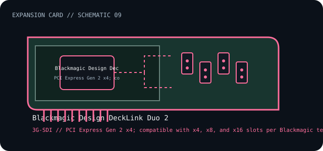

[ INDIVIDUAL COMPONENT // EXPANSION CARDS ]
Blackmagic Design DeckLink Duo 2
Four-channel, bidirectional 3G-SDI PCI Express capture/playback card. This is a model-specific catalog entry; confirm the exact label and revision before use.

IDENTIFICATION: Match the full model/part number and board revision to the label. Port and bus information below is included only where the linked manufacturer or standards documentation supports it; revisions and platform support may differ.
Specifications and service checks
| Catalog subcategory | Capture and playback cards |
|---|---|
| Exact model / part identifier | DeckLink Duo 2 |
| Bus / host interface | PCI Express Gen 2 x4; compatible with x4, x8, and x16 slots per Blackmagic technical specifications. |
| Verified interfaces / protocols | Four independently configurable 12-bit SD/HD 3G-SDI inputs/outputs; embedded SD/HD audio and tri-sync/black-burst reference input. |
| OS / driver / firmware caveat | Use Blackmagic Desktop Video software and check the release notes for the host OS, application, and firmware support matrix. Slot fit is not sufficient if the host lacks the required PCIe lane allocation. |
| Service note | Record Desktop Video software and card firmware versions before upgrades. Label channel direction in the application; all four SDI connections are bidirectional and are not fixed input-only ports. |
Installation and archival notes
- Record the board model, revision, serial/date code, firmware, bracket, accessories, and the documentation revision used to identify the unit.
- Confirm the host slot's electrical wiring/keying, required power, supported OS/driver, and any platform or option-ROM restriction in the cited model documentation.
- Use ESD precautions. Do not infer pinout, compatibility, protocol, boot support, or revision equivalence from a similar connector or product-family name.
Record Desktop Video software and card firmware versions before upgrades. Label channel direction in the application; all four SDI connections are bidirectional and are not fixed input-only ports.
Model-specific sources
- Blackmagic Design — DeckLink Duo 2 technical specificationsModel-specific channel, SDI, sync and PCIe interface specifications.
- Blackmagic Design — Desktop Video downloadsSupported software and operating-system release notes.
Source links are selected for this exact model or its manufacturer-documented family. Review the source revision and your card's printed identifiers before service.